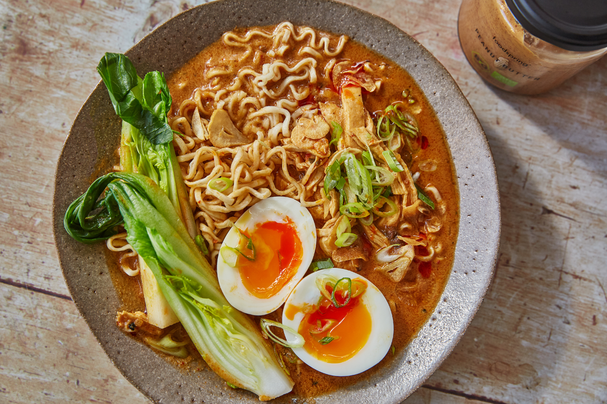

Ramen

is a Japanese noodle dish. It consists of Chinese-style wheat noodles served in a broth;
common flavors are soy sauce and miso, with typical toppings including sliced pork,
nori (dried seaweed), menma (bamboo shoots), and scallions. Ramen has its roots in Chinese noodle dishes.
Nearly every region in Japan has its own variation of ramen, such as the tonkotsu (pork bone broth) ramen of Kyushu and the miso ramen of Hokkaido.
- 3 cups vegetable broth
- 1 (3.5 ounce) package ramen noodles with dried vegetables
- 2 teaspoons soy sauce
- 1/2 teaspoon chili oil
- 1/2 teaspoon minced fresh ginger root
- 1 teaspoon sesame oil
- 2 green onions, sliced
- Stir-Fry Aromatics: Garlic and ginger, what a delicious duo
- Make Your Broth: Add some chicken broth and dried shiitake mushrooms for some umami punch
- Add Noodles: Cook your noodles right in the broth with some scallions
- Add Veg: Thinly sliced kale, shredded carrots, whatever you’d like! Cook until just tender
- Top It Off: Add some crunchy panko crumbs, a soft-boiled egg, chili oil, hot sauce, sesame oil, and/or soy sauce, whatever your heart desires